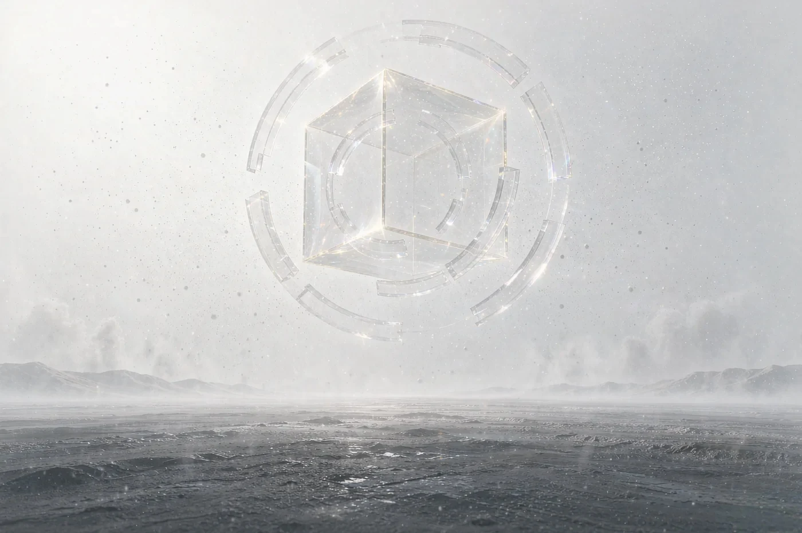
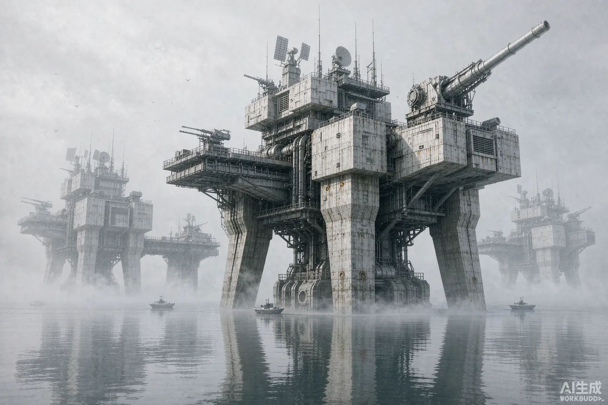

01
尘 PULVIS
构成时空的动态认知介质，常态下表现为稳定空间。随机运动的粒子态，与信息熵息息相关。
- 形态动态粒子态
- 关联信息熵
- 状态稳定 / 危险 / 规律

尘是构成时空的认知介质。它记录一切，也侵蚀一切。
当认知的边界被强行撑破，看见的人，便不再是原来的自己。
PULVIS ARCHIVUM · 认知时空的基本形态
人类很早便知晓尘的存在。文明早期，信息闭塞，很多人将尘视作超自然的现象。
直到制度性宗教与政治体系发展，文化趋于统一、信息流通加快，部分文明才发现——
尘可能与疯狂、紊乱与破坏相关。
构成时空的动态认知介质，常态下表现为稳定空间。随机运动的粒子态，与信息熵息息相关。
受高维影响时转化的危险态。呈现异色纹路能量乱流——熔金色裂痕、紫黑色旋涡。
对尘在特定时空区域运动规律的可解析模式的现象描述。它是一种模型，不是能量流。
大量尘围绕一个强大的意识信息核心聚集固化，形成的独立意识时空泡。内外时空不对等。
尘记录的时空碎片在现实世界中的偶然泄露。前尘是过去事件的片段，后尘是未来可能事件的片段。
自然尘寰完全崩解后残留的、富含稳定尘信息（已被解析固化）的矿物。技术应用的基础材料。
被尘（常是尘暴）深度侵染或改造的自然生物 / 物体，行为受尘或更高存在影响，常具攻击性。
追逐 / 利用尘的存在。常聚集在尘活跃区，其活动会加剧尘的不稳定，诱发尘暴、改造环境。
尘暴将至：空气出现油膜般的异常散射反光。
尘寰将现：空气中渗出细微的星芒状意识漩涡。
旧日：来自高维的生命体，能够扭曲改变四维空间的物理规律与信息。对普通人来说，认知即风险。
TECHNOLOGIA PULVIS · 与尘相关的五项核心技艺
FACTIONES · 能够大幅度干预主世界状况的势力

总部藏于任何已知航线都难以涉及的远洋极深海域，由数十至数百座规模不等的堡垒构成。水上部分以武器与感知系统为主体；水下部分，是调查社赖以存在的智脑。
再向下数千米、飘落海洋雪的无光深渊中，海床上的盐卤池里悬浮着数以万计的尘晶球形保护罩——每个保护罩内含有一台服务器，由经考验淬炼的纯净人类意识驱动。
PERSONAE · 类型学代号体系
呼唤个人的人格类型学代号，既是在呼唤个人在社会中的位置，又是在呼唤个人本身。
谨慎对待你的代号——它能反映你的本体及该本体与社会的联接，但它不是你的本体。
灰底 = 档案未定稿（人设仍有 2 处以上【待定】字段） ／标签口径：身份 · 定位
CHRONOLOGIA · 调查社与联合政府的百年霜雨
MEMORIAE · 被记录下来的认知残响

凭依个人心灵的集体无意识。通常以少女形象出现。
银灰色长发，象征金属与石质的工具；橘红色的瞳孔，象征火焰；孩子的脸庞，取自弗洛伊德；
以及类似母亲的包容与善良的神态，取自荣格的大母神理论。她负责解答各种关于仪式与世界观的问题。
形象原型取自欧律狄刻——回头便会失去，注视即是分离。
因此她的身影，永远停在将离未离之间。
因在同一集体中、个人的集体无意识会趋于相似，
所以在同一时空下，同一团队的个体看见的，是同一个 Mana。